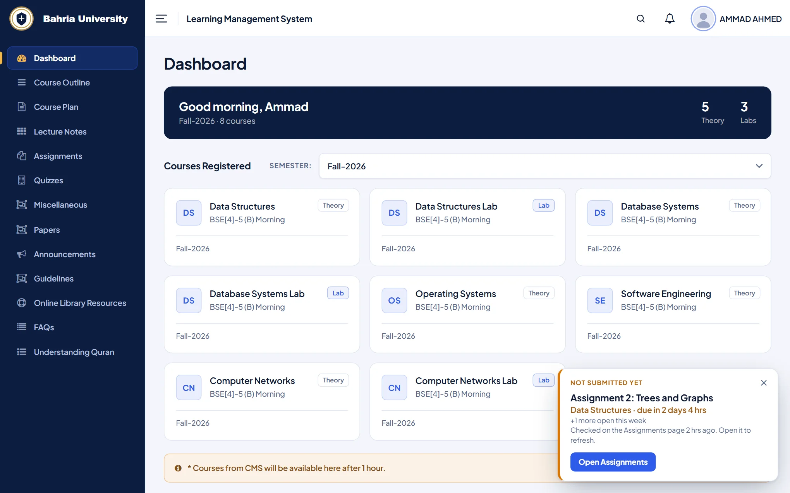
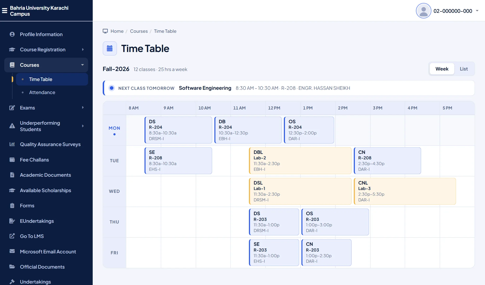
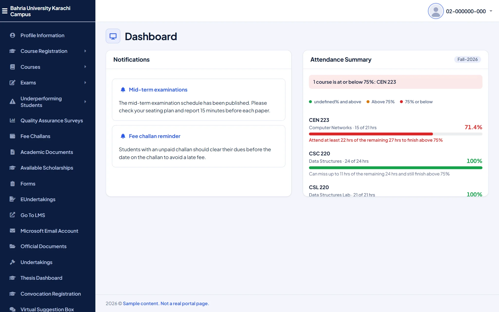
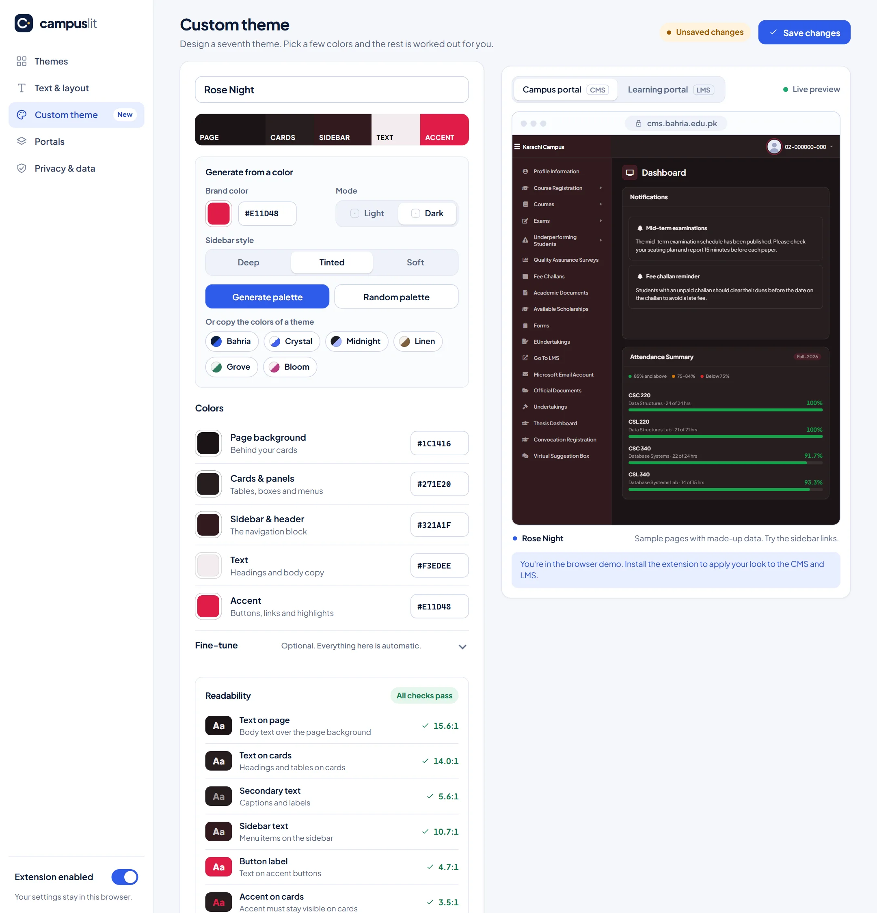

The LMS, redesigned
A sidebar that shows where you are, readable tables, clear status labels and downloads a tap away.
Campuslit restyles the Bahria University student CMS and LMS: cleaner pages, a time table you can actually read, attendance at a glance, six themes and a maker for your own. Same data, same links.

What you get
Campuslit changes how the portals look and read. It does not change what they do.
A sidebar that shows where you are, readable tables, clear status labels and downloads a tap away.
A one-page week calendar or a day-by-day board, with your next class always on top.
One bar per course that turns amber, then red, before it becomes a problem.
A compact sign-in with show or hide password and a Caps Lock warning. Errors appear where you can see them.
Six themes, or design your own. Plus four fonts, text size, spacing and corner roundness.
No accounts, no analytics, no servers. It only restyles what your browser already shows.
Time table
The portal draws your schedule as a wide grid that is hard to scan. Campuslit draws the same classes as a clean calendar, and tells you what is next.

CMS dashboard
The attendance chart becomes one readable row per course, with a plain line under it: how many hours you can still miss this semester, or how many you must attend to finish above 75%. It counts from your credit hours and the length of your semester.

Custom theme
Pick one brand color and Campuslit builds the rest, or take control of every color. A readability check keeps text clear, and your theme joins the gallery as number seven.

Themes
Six hand-tuned themes, or design your own. Settings update the portals live.
Settings, with a live preview, open from the Campuslit toolbar icon.
Get Campuslit
Store listings are on the way. Until then, installing from the download takes four clicks.
Works on any Chromium browser on a computer.
Download for ChromeFirefox 140 or newer on a computer.
Download for Firefoxcampuslit-chrome.zip from the latest release and unzip it somewhere you will keep it.chrome://extensions (or edge://extensions) and switch on Developer mode.campuslit-firefox.zip from the latest release and unzip it.about:debugging#/runtime/this-firefox.manifest.json inside the folder.How to use
Install it, sign in the way you always do, and the portals look different.
Follow the steps above. Pin it to your toolbar so it is one click away.
The new look applies by itself. Your password goes to the university exactly as before; Campuslit never sees it.
Click the Campuslit icon to switch themes in one tap. Choose Open settings for accent colour, fonts, text size, spacing and a live preview, or open Custom theme in the settings sidebar to design your own. Click Save appearance and your open portals update.
Click the Campuslit icon: one switch turns everything on or off, and the CMS and LMS switches below it turn just one portal on or off.
Privacy
Campuslit has no server, no account and no analytics. Everything happens in your browser.
It does not read form values, change what a form sends, or touch your login.
It runs on cms.bahria.edu.pk and lms.bahria.edu.pk, and asks for the browser’s storage permission to remember your theme.
Every line is on GitHub under the MIT licence. Read it, or ask a friend who codes to.
To redraw a few screens it reads figures the page already shows, such as your attendance percentages and class schedule, in memory only. Nothing is saved or sent. Read the full policy.
Questions
No. Campuslit is an independent project by a Bahria student. It is not made, endorsed or supported by Bahria University, and the university’s name and emblem are theirs.
Campuslit changes appearance only. Forms, links, uploads and downloads still go to the university exactly as before. If anything ever looks wrong, switch Campuslit off from its popup (or just that one portal) and the portal returns to normal.
Yes. Open Campuslit settings and choose Custom theme in the sidebar. Pick a brand color and a mode and it builds a full palette, or start from one of the six themes and change any color. The readability check warns you if text gets hard to read and can fix it for you. Your theme shows up as the seventh one in the settings and in the toolbar popup.
Chrome, Edge and Brave (and other Chromium browsers) on a computer, and Firefox 140 or newer on a computer. Browsers on phones generally do not run extensions like this.
Nothing. It is free and open source.
The store listings are being prepared and reviewed. This page will link to them as soon as they are live. Installing from the download works the same way.
The university can change its pages at any time, and that can upset a restyle. Switch Campuslit off for that portal, then report it on GitHub with a screenshot (blur your name and number first).
Free, private and gone the moment you switch it off.